Relaciones
Relaciones
 Relaciones
Relaciones
Que el alumno reconozca cómo se construyen las diferentes representaciones de una relación y de una composición de relaciones.
Se presenta una reseña, a través de un texto y de un video, sobre de la importancia de estudiar las relaciones (o relaciones binarias), mostrándose algunos ejemplos de su aplicación en numerosos ejemplos, incluyendo la industria, la computación, la vida cotidiana y por supuesto las matemáticas.
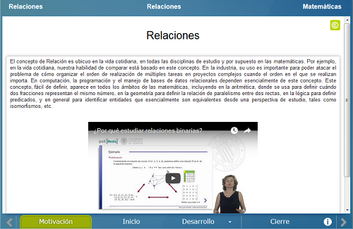
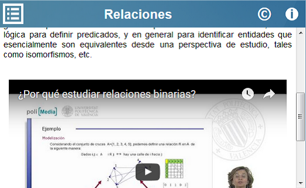
Se define el concepto de Relación y se muestran e ilustran algunos ejemplos. Así mismo, se define el concepto de cmocomposición de relaciones, de identidad y asociatividad de relaciones, y se definen propiedades básicas de Relaciones: reflexividad, simetría, transitividad.
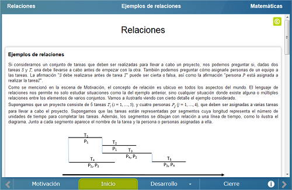
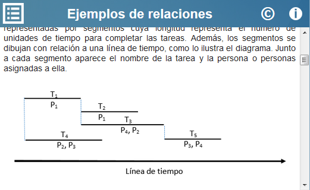
Esta sección consta de tres escenas enteractivas. En la primera se ilustra de forma interactiva la representación gráfica de una relación. El usuario construye la gráfica de la relación mientras se va construyendo la matriz correspondiente.
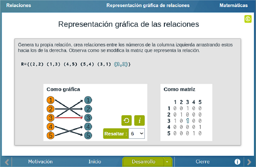
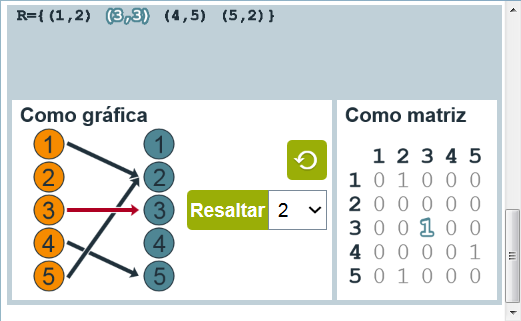
En la segunda escena interactiva el usuario construye la gráfica de la composición de dos relaciones a partir de su expresión como un subconjunto del producto cruz de dos conjuntos. También puede visualizar la matriz que representa las dos relaciones y la composición.
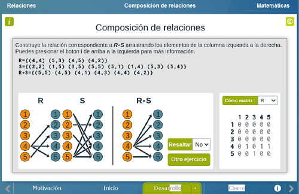
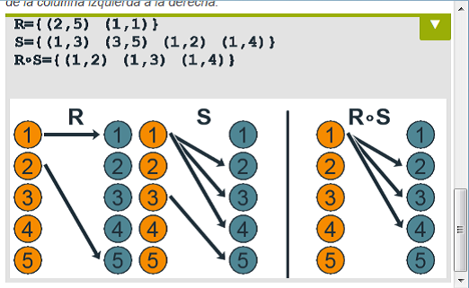
Finalmente, en la tercera escena el usuario construye la gráfica de la composición de una relación consigo misma, con la identidad o con su inversa. Nuevamente puede visualizar la matriz correspondiente a cada relación y a cada composición.
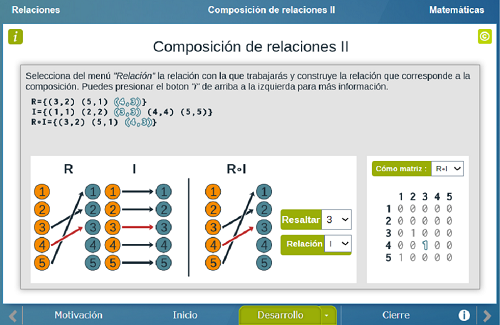
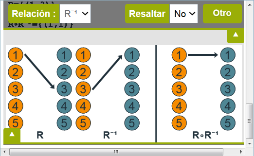
Se realiza una breve evaluación de opción múltiple sobre el contenido de la unidad didáctica.
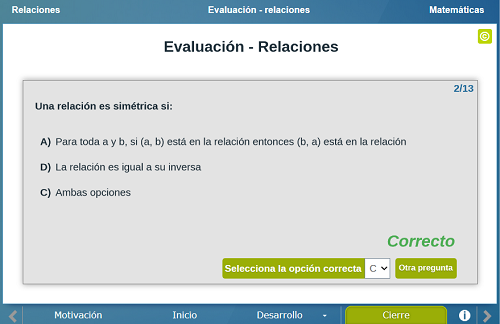
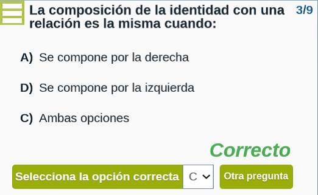
| Diseño del contenido | Julio Arnoldo Prado Saavedra
Víctor Manuel Amezcua Y Raz |
| Diseño funcional | Julio Arnoldo Prado Saavedra
Víctor Manuel Amezcua Y Raz |
| Programación | Julio Arnoldo Prado Saavedra |
| Asesoría de programación | Víctor Manuel Amezcua Y Raz |
| Diseño gráfico | Ricardo López Gómez |
| Coordinación | Leticia Montserrat Vargas Rocha |
| Diseño funcional | Julio Arnoldo Prado Saavedra
Oscar Escamilla González |
| Programación | Julio Arnoldo Prado Saavedra |
| Asesoría de programación | Oscar Escamilla González
Leticia Montserrat Vargas Rocha |
| Diseño gráfico | Francisco Varela Fuentes |
| Coordinación | Leticia Montserrat Vargas Rocha |
| Desarrollo del contenedor | Oscar Escamilla González |
Los contenidos de esta unidad didáctica interactiva están bajo una licencia Creative Commons Reconocimiento-NoComercial-CompartirIgual.
La unidad didáctica fue creada con Arquímedes, una herramienta de código abierto.
La unidad didáctica contiene escenas elaboradas con Descartes, una herramienta de código abierto.
LITE - UnADM 2014